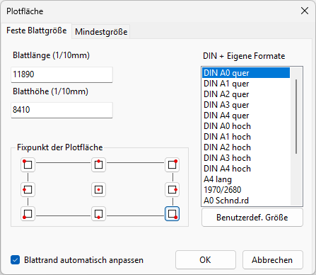
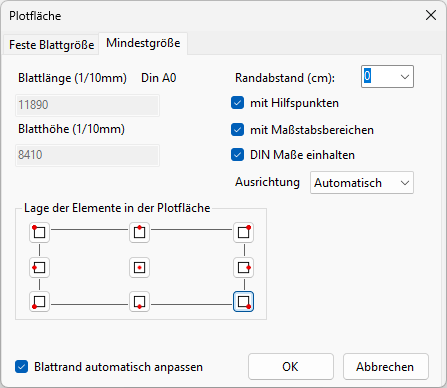

")
Einstellen der Plotfläche. Öffnet den Dialog Plotfläche.
Vorbemerkungen:
·Die Voreinstellungen für die Plotfläche können im Dialog Systemdaten vorgenommen werden. » Systemdaten – Plotfläche.
·Sie können Elemente, die außerhalb der Plotfläche liegen, mit der Funktion [Konst1 | FenÄnd | löauPl] löschen.
·Die aktuell eingestellte Plotfläche wird in der Statusleiste angezeigt:
Optionen im Dialog "Plotfläche"
Registerkarte: Feste Blattgröße
Auf dieser Registerkarte können Sie ein individuelles Blattformat für die Plotfläche einstellen oder ein DIN- oder selbstdefiniertes Format wählen. Sie können bestimmen, in welche Richtung die Größenänderung der Plotfläche erfolgen soll, damit beispielsweise der Plankopf seine Position nach der Änderung behält.  Blattlänge (1/10mm); Blatthöhe (1/10mm) Um die Größe zu ändern, tragen Sie die Werte unter Blattlänge und Blatthöhe in 1/10mm in die Eingabefelder ein oder klicken eine der Blattgrößen in der Auswahlliste an. Fixpunkt der Plotfläche Bestimmen Sie einen Fixpunkt auf der Plotfläche, von dem aus die Plotfläche vergrößert bzw. zu dem sie verkleinert werden soll.
Benutzerdefinierte Größe Konfiguration von bis zu zehn beliebigen Blattformaten, z. B. für bürospezifische Blattformate, verschiedene Normformate, Übergrößen oder Standardgrößen, die um den doppelten Schneiderand vergrößert sind. Öffnet den Dialog Benutzerdefinierte Plotfläche.
|
Registerkarte: Mindestgröße
Auf dieser Registerkarte stehen Ihnen Möglichkeiten einer automatischen Anpassung der nötigen Plotfläche an die vorhandenen Elemente zur Verfügung. Die Plotfläche wird auf das notwendige Maß vergrößert oder verkleinert. Es werden alle Elemente berücksichtigt, die in eingeschalteten Folien gezeichnet sind. Die Zeichnung wird sofort auf die maximale Bildschirmgröße angepasst.  Blattlänge (1/10mm); Blatthöhe (1/10mm) Diese Angaben dienen nur zur Information und können nicht editiert werden. Die Angaben werden je nach gewählter Einstellung, wie mit Maßstabsbereichen oder ohne, oder DIN Maße einhalten oder nicht, aktualisiert. Wenn die Option DIN Maße einhalten aktiviert ist, wird neben der Blattlänge das resultierende Blattformat angegeben. Lage der Elemente in der Plotfläche Verfügbar, wenn DIN Maße einhalten aktiviert ist. Bestimmen Sie, wo die Zeichnung innerhalb der Plotfläche nach dem Vergrößern oder Verkleinern liegen soll. Beispiel:
Randabstand Geben Sie einen Abstand in Zentimetern ein. Dieser Streifen wird um die ganze Zeichnung gelegt. Bei DIN Maße einhalten bezieht sich der Randabstand auf die gewählte Lage der Zeichnung in der Plotfläche, zum Beispiel: · Lage links unten = Randabstand zum linken und unteren Rand der Plotfläche · Lage links mittig = Randabstand zum linken Rand der Plotfläche · Lage links oben = Randabstand zum linken und oberen Rand der Plotfläche ·usw. mit Hilfspunkten Setzen Sie hier einen Haken, wenn Hilfspunkte berücksichtigt werden sollen. mit Maßstabsbereichen Setzen Sie hier einen Haken, damit die Maßstabsbereiche vollständig in der Plotfläche liegen. Wenn kein Haken gesetzt wird, werden bei der Anpassung der Plotfläche nur die enthaltenen Elemente berücksichtigt. DIN Maße einhalten Wenn der Haken gesetzt ist, wird die Plotfläche, falls möglich, auf das nächst größere oder kleinere DIN Maß verändert. Wenn kein Haken gesetzt wird, werden bei der Anpassung der Plotfläche nur die enthaltenen Elemente berücksichtigt. Ausrichtung Wählen Sie, welche DIN-Formate eingehalten werden sollen: ·Automatisch: Es werden Quer- und Hochformate berücksichtigt ·Querformat: nur Querformate werden berücksichtigt ·Hochformat: nur Hochformate werden berücksichtigt |
Blattrand automatisch anpassen
Setzen Sie hier einen Haken, damit ein mit [Konst 3 | Blattr] erstellter Blattrand bei einer Plotflächenänderung mit angepasst wird.

Übernimmt die Größenänderung und schließt den Dialog.

Verwirft alle Änderungen und schließt den Dialog.